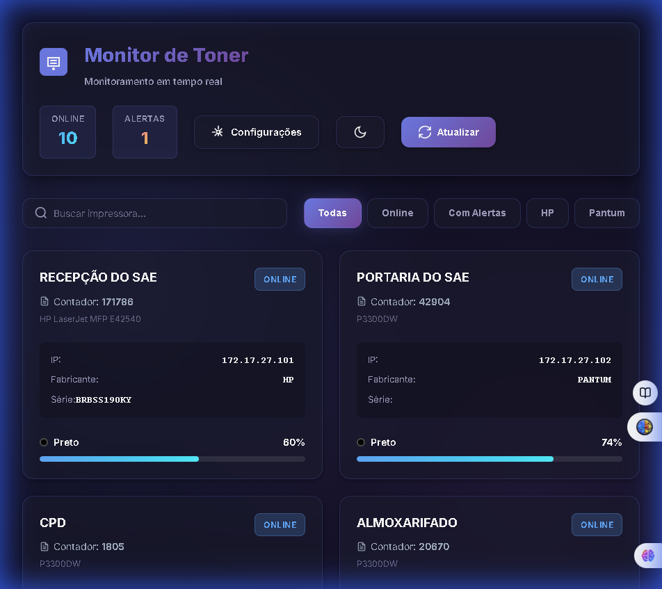
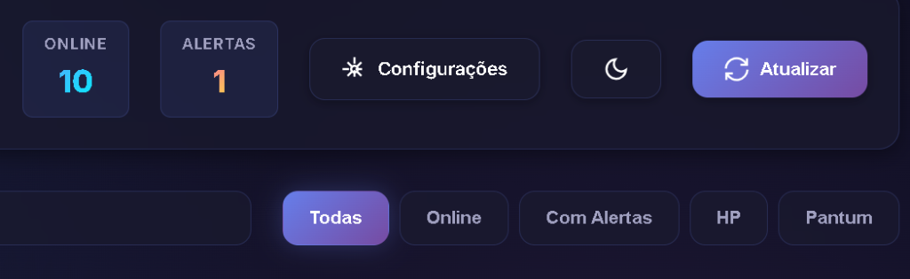
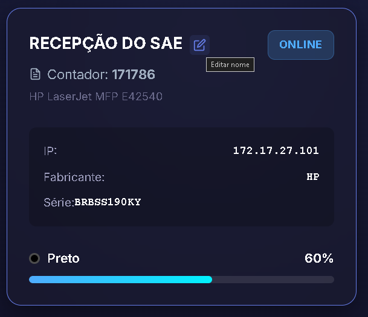
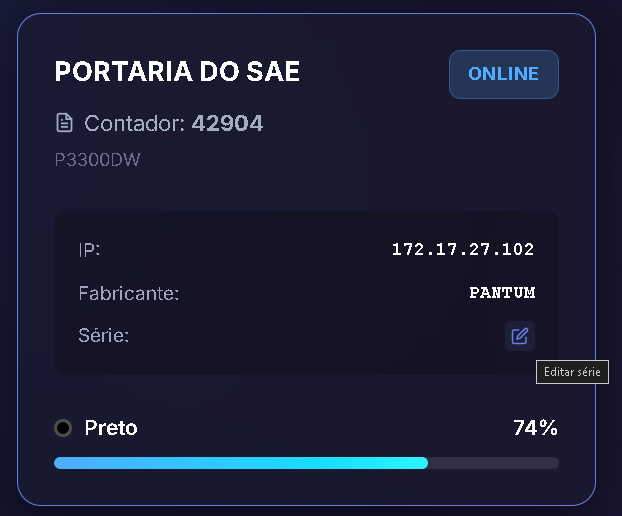
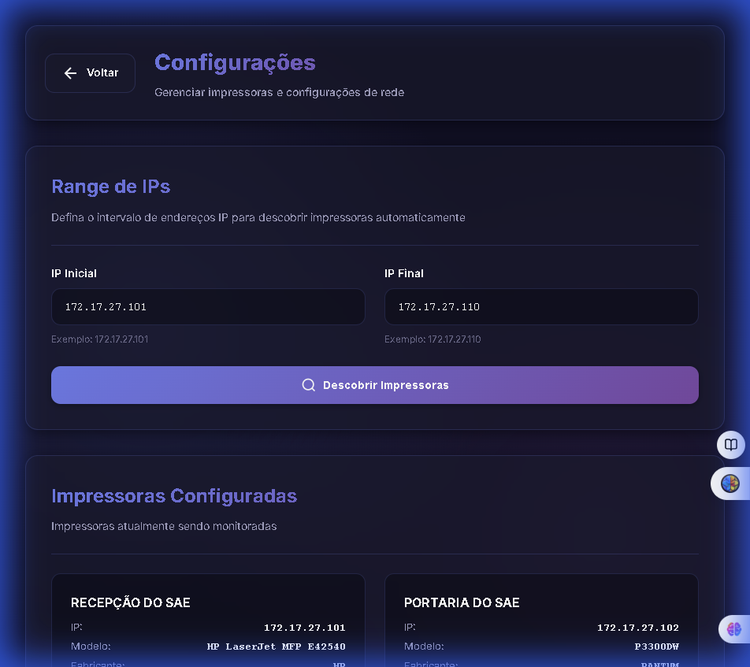

Este sistema permite que você monitore em tempo real o status e os níveis de
toner das impressoras de rede da sua organização. Com ele, você pode antecipar trocas de cartuchos,
identificar impressoras offline e gerenciar todo o parque de impressão de forma centralizada.
Dica: O sistema atualiza automaticamente os dados a cada 5 minutos. Você pode
forçar uma atualização clicando no botão "Atualizar" no topo da página.
Visão Geral do Painel
O painel principal exibe todas as impressoras cadastradas em formato de cartões.
Cada cartão contém informações vitais como:

Painel principal mostrando todas as impressoras monitoradas
Status da Conexão
Indica se a impressora está Online (verde) ou Offline (vermelho).
Níveis de Toner
Barras de progresso que mostram a porcentagem restante de cada cartucho. Cores mudam conforme o
nível baixa (Amarelo para alerta, Vermelho para crítico).
Contador de Páginas
Mostra o total de páginas impressas pelo dispositivo.
Barra de Ferramentas
No topo da tela, você encontra os controles principais do sistema para
monitoramento e gestão rápida.

Contadores, botões de ação e filtros de impressoras
Contadores (Online / Alertas)
Exibem rapidamente quantas impressoras estão conectadas e quantas requerem atenção (toner baixo
ou erro).
Configurações
Acesso à tela de descoberta de impressoras e definições de rede.
Modo Escuro / Claro
Botão (ícone de lua/sol) para alternar a aparência do sistema para melhor conforto visual.
Atualizar
Força uma atualização imediata do status de todas as impressoras.
Filtros Rápidos
Botões para visualizar apenas grupos específicos: 'Online', 'Com Alertas' (exibe apenas as que
precisam de atenção), 'HP' ou 'Pantum' (filtra por fabricante).
Editando Informações
É possível editar o nome onde a impressora está instalada para facilitar a
identificação. O mesmo procedimento pode ser feito com o número de série, caso ele não seja
carregado automaticamente (situação comum em modelos Pantum).

Botão de edição ao lado do nome da impressora

Botão de edição do número de série (comum em impressoras Pantum)
Ativar Edição
Clique no botão de edição (ícone de lápis) localizado ao lado do nome da impressora ou do número
de série.
Alterar Dados
Digite a nova informação no campo que aparecerá.
Salvar
Clique no botão "Salvar" para confirmar a alteração no sistema.
Configurações e Descoberta
Na página de configurações, você pode buscar por novas impressoras na rede.

Interface de descoberta de impressoras por faixa de IP
Definir Faixa de IP
Insira o IP inicial e final da sua rede (ex: 192.168.1.1 até 192.168.1.254).
Iniciar Busca
Clique em "Procurar Impressoras". O sistema irá varrer a rede em busca de dispositivos
compatíveis via protocolo SNMP.
Salvar Resultados
Ao finalizar, marque as impressoras encontradas que deseja monitorar e clique em "Salvar
Selecionadas".